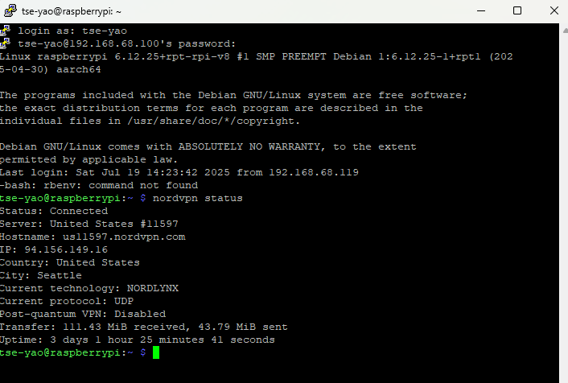
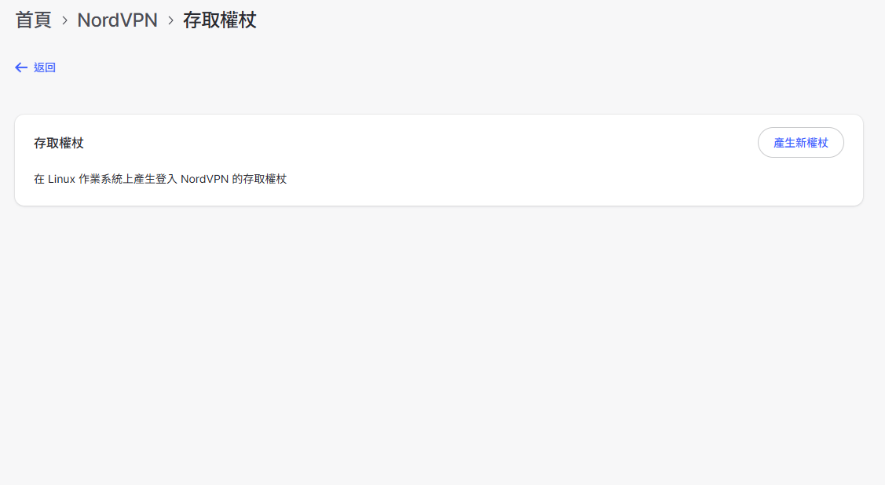

利用Raspberry Pi設置軟路由(以NORDVPN為例)

相信大家對於NORDVPN一定不陌生，只要有使用VPN的人，不可能不知道這個各大YT網紅都在置入性行銷的VPN服務商。小弟也是NORDVPN的使用者，小弟最早是使用PUREVPN，只是PUREVPN破解能力有限，所以就轉戰NORDVPN以及EXPRESSVPN了。NORDVPN雖然在連線速度不及EXPRESSVPN，但是其價格較便宜，功能也較EXPRESSVPN更多，因此不外乎很多網友/網紅都會推薦使用這個品牌的VPN。但是關於要如何使用NORDVPN在RaspberryPi的軟路由上，網路上的文章不是沒有，只是多數文章推薦的作法都較為複雜，且使用的方式都是OPENVPN的協定，占用的資源較多，所以小弟就在網路上蒐集相關資訊後，找出了比較容易的作法。
安裝NORDVPN
在RaspberryPi終端機的畫面，輸入以下指令，安裝NORDVPN。
sh <(curl -sSf https://downloads.nordcdn.com/apps/linux/install.sh)
在RaspberryPi(軟路由)中登入NORDVPN帳號
先用電腦瀏覽器登入NORDVPN網頁，輸入帳號密碼後，進入個人首頁>NordVPN>取得存取權杖的頁面之後，點選取得新權杖，當然你如果怕麻煩，可以在產生新權杖的時候選擇Doesn't expire(而不是Set to expire in 30 days)。然後複製新權杖。接者在RaspberryPi終端機的畫面，輸入以下指令。
nordvpn login --token <此處貼上你剛才複製的新權杖>

這樣你的RaspberryPi(軟路由)就正式登入NORDVPN了。
避免斷線啟動自動接續功能
另外，為了避免連上VPN後會因為某些狀況斷線，請在RaspberryPi(軟路由)的終端機畫面輸入以下指令，讓軟路由可以在斷線後自動連線。
nordvpn set autoconnect on
另外，為了避免連上VPN後，導致區域網路的電腦無法連線至軟路由，請在RaspberryPi(軟路由)的終端機畫面輸入以下指令。
nordvpn set lan-discovery enable
nordvpn whitelist add subnet 192.168.X.X/24 <---你的區網網域，例如192.168.1.xxx/24
最後，為了取得比較快的VPN連線速度，請輸入以下指令啟用Nordlynx通訊協定。
nordvpn set technology NordLynx
常用的NORDVPN指令
你可以輸入以下指令，啟動VPN連線。
nordvpn connect jp538
或者
nordvpn connect United_States
若要中斷連線就執行以下指令
nordvpn disconnect
要查看連線狀態就執行以下指令
nordvpn status
制訂軟路由的網路流量規則
輸入以下指令，在RaspberryPi(軟路由)上制訂軟路由的網路流量規則。
sudo iptables -t nat -A POSTROUTING -o nordlynx -j MASQUERADE
sudo iptables -A FORWARD -i nordlynx -o wlan0 -m state --state RELATED,ESTABLISHED -j ACCEPT
sudo iptables -A FORWARD -i wlan0 -o nordlynx -j ACCEPT
當然，如果有顯示錯誤訊息，請輸入以下指令安裝iptables
sudo apt-get install iptables
sudo apt-get install iptables-persistent
Apple TV上的設定
接下來就是在Apple TV上的設定了，首先要知道RPi4的IP位置，IP位置可以用以下指令找出。
hostname -I
再來就是在Apple TV上的設定了，簡單來說就是手動將Apple TV上路由的ip位置，改成你的軟路由器的ip位置，DNS則是可以選擇8.8.8.8或是1.1.1.1，基本上就完成了。
延伸閱讀:
NORDVPN官網利用Raspberry Pi設置軟路由(以Express VPN為例)
NordVPNをLinux（Ubuntu、Raspberry pi）にインストールする方法と使い方
[Raspberry Pi] NordVPN の各種設定How to use a token with NordVPN on Linux
另外，歡迎參觀我的TikToK
對板球有興趣的可參考:
https://a1253247.blogspot.com/2022/05/cricket-line-written-by-admin-24-10.html
對生活飲食有興趣，可參考: